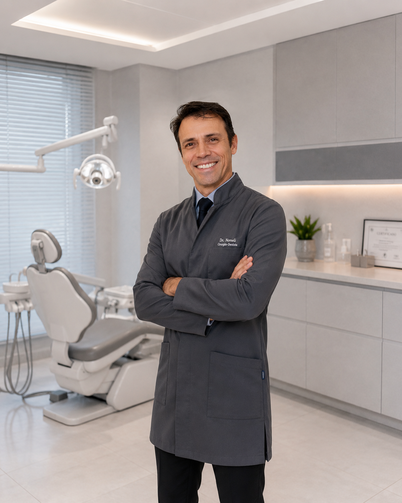

ODONTOLOGIA ESPECIALIZADA — CURITIBA
Sorrisos transformados com precisão e tecnologia
Dr. Márcio Constante é Cirurgião Dentista e Técnico em Próteses Dentárias. Especialista em implantes planejados digitalmente, com laboratório próprio integrado à clínica.

Dr. Márcio Constante
Cirurgião Dentista & Técnico em Próteses Dentárias | CRO/PR 25.227
Com mais de 15 anos de experiência clínica, o Dr. Márcio Constante reúne uma formação única: é ao mesmo tempo Cirurgião Dentista e Técnico em Próteses Dentárias. Isso significa que ele planeja, executa e finaliza praticamente todo o tratamento dentro da própria clínica e do laboratório integrado.
Especialista em implantes protocolo, unitários e zigomáticos, utiliza guias cirúrgicos planejados com software de última geração, garantindo cirurgias mais seguras, precisas e com resultados previsíveis.
-
Cirurgião Dentista e Técnico em Próteses -
Cirurgia guiada com planejamento digital 3D -
Scanner intraoral e fresadora CAD/CAM -
Laboratório próprio integrado à clínica
Nossas Especialidades
Tratamentos completos com tecnologia de ponta e o cuidado que você merece
Implante Protocolo
Reabilitação total da arcada com implantes fixos em um único procedimento. Solução definitiva para quem perdeu todos os dentes.
Saiba maisImplante Unitário
Substituição de dentes perdidos individualmente com implantes de alta qualidade, devolvendo função e estética ao sorriso.
Saiba maisImplante Zigomático
Solução para casos complexos com osso insuficiente. Reabilitação completa utilizando os ossos zigomáticos como ancoragem.
Saiba maisRestaurações
Restaurações estéticas em resina composta e porcelana para devolver a beleza e a função natural dos seus dentes.
Saiba maisRAP
Raspagem e Alisamento Periodontal para tratamento da doença periodontal, garantindo saúde e longevidade dos implantes.
Saiba maisClínica Geral
Atendimento completo em odontologia geral: limpeza, prevenção, exodontias, endodontia e muito mais.
Saiba maisDo planejamento à prótese — tudo dentro da clínica
A clínica do Dr. Márcio Constante é totalmente informatizada. O diagnóstico começa com o scanner intraoral, o planejamento cirúrgico é feito em software 3D especializado com geração de guias cirúrgicos, e as próteses em porcelana são fresadas in-house pela fresadora CAD/CAM. Tudo isso com o controle de quem é cirurgião e técnico ao mesmo tempo.
Nossos Diferenciais
Cirurgião e Protético
Dupla formação única: Dr. Márcio é Cirurgião Dentista e Técnico em Próteses, dominando cada etapa do tratamento.
Cirurgia Guiada Digital
Implantes planejados em software 3D com geração de guia cirúrgico para maior precisão, segurança e previsibilidade.
Laboratório Próprio
Clínica e laboratório integrados: próteses em porcelana fresadas in-house pela máquina CAD/CAM, com total controle de qualidade.
Atendimento Humanizado
Cada paciente recebe atenção individualizada em todas as etapas — do diagnóstico digital à entrega da prótese final.
Conheça nossa clínica
Ambiente moderno, totalmente equipado com tecnologia de ponta para o seu conforto e segurança
{kind=link}
{kind=link}
{kind=link}
{kind=link}
{kind=link}
{kind=link}
Depoimentos
Perguntas Frequentes
O implante protocolo (também chamado de "All on 4" ou "All on 6") é uma solução para reabilitação total da arcada dentária. Com apenas 4 a 6 implantes estrategicamente posicionados, é possível fixar uma prótese dental completa, permitindo que o paciente saia do consultório com dentes fixos no mesmo dia.
O implante zigomático é indicado para casos de grande reabsorção óssea na região superior da boca, onde o volume de osso é insuficiente para receber implantes convencionais. Utiliza os ossos da maçã do rosto (zigomáticos) como ancoragem, permitindo a reabilitação mesmo em casos complexos.
O guia cirúrgico é um dispositivo confeccionado a partir do planejamento digital 3D da cirurgia. Ele posiciona os implantes com exatidão milimétrica, exatamente como foi planejado no software. As vantagens são: menor tempo de cirurgia, redução de incisões, menos sangramento, recuperação mais rápida e resultado altamente previsível.
O tempo varia conforme o caso de cada paciente. Implantes unitários geralmente são concluídos em 3 a 6 meses. No protocolo, a prótese provisória pode ser instalada no mesmo dia do procedimento. O Dr. Márcio avaliará sua situação e indicará o plano de tratamento ideal.
A Raspagem e Alisamento Periodontal (RAP) é um procedimento para tratar a doença periodontal (inflamação das gengivas e osso que suporta os dentes). É indicada quando há presença de cálculo abaixo da gengiva, sangramento, mobilidade dentária ou bolsas periodontais. É essencial para a saúde e longevidade dos implantes.
Você pode agendar diretamente pelo WhatsApp clicando em qualquer botão de agendamento nesta página. Nossa equipe retornará rapidamente para confirmar o horário mais conveniente para você.
Pronto para transformar o seu sorriso?
Agende sua avaliação e descubra qual é a melhor solução para você. Atendimento personalizado e humanizado.